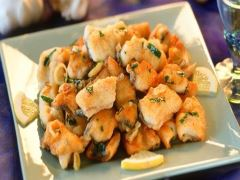

~TheSavoury~
Ingredients
Crunchy and delicious, you’ll love this Italian inspired dish of fried eel
Cut the eels into pieces about 6 cm long, leaving the skin on and discarding the head and tail. Place the pieces in a colander and rinse them well under cold water until perfectly clean. Put two glasses of oil into a frying pan and heat; combine the two types of flour and coat the washed pieces of eel in the mixed flour, then fry them slowly, turning over often. It will take about ten minutes to make sure they are well cooked inside. Place them on pieces of paper towel, sprinkle with fine or medium salt and serve hot with "Insalata di rinforzo, (a Christmas salad from Naples you can find in the recipe channel of this app). If you have leftovers, place pieces of hot fried eel in a glass dish, sprinkle with salt and pour a glass of white wine vinegar over them; crumble a couple of bay leaves over them. Store in a dry, well-ventilated place and serve the next day. Wine pairing: Lambrusco Reggiano